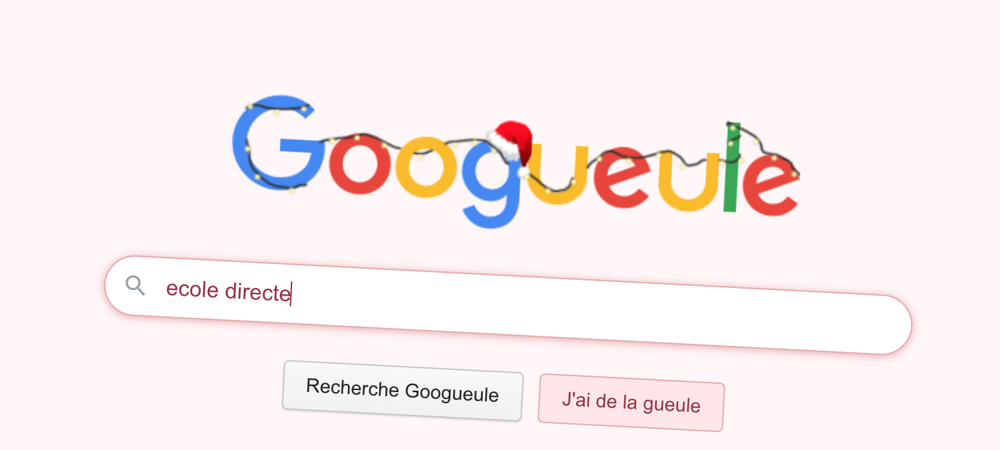

Googueule est un site web humoristique créé en 2012 par des développeurs français. Il s’agit d’une parodie du moteur de recherche Google.
Le nom Googueule est un jeu de mots entre Google et gueule, le mot familier pour bouche.
Lorsque l'on fait une recherche, le site cri et tremble, se qui est amusant.
Essaye Googueule maintenant !
